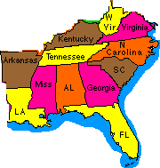

Tools for Teachers | Weather Sites | Grants | Entertainment
LinksVille | State Departments of Education | Tools for Teachers | Weather Sites | Grants | Entertainment
Browser Watch (all about web browsers)
CityNet-Major cities and street maps!
A comprehensive collection of information sources about the Internet.
Another great information source for the internet.
Massachusetts Institute of Technology Homepage
DejaNews (lots of neat stuff here)
Mid-Continent Regional Educational Laboratory
Foreign Languages for Travelers
Bartlett's Familiar Quotations
Virtual Reference Desk for Information Junkies
How-To (carve a turkey, tie a necktie, fix a leaky faucet, and other life lessons
People Finder-Comprehensive E-Mail, telephone, and net directory with over 10 million listings
Biographies (over 15,000 from A & E cable network's programs)
Postal Address Server (never send another piece of mail without a zip code)
Barron's Market Watch (daily market surveillance and analysis)
Universal Currency Converter (convert US dollars into any currency)
The Web Developer's Virtual Library
Blue Ice-Internet Journey to Antarctica
The 23 Peaks (Climbing America's Peaks)
Great Globe Gallery-images, graphics of Earth.
City Net-guide to communities around the world.
Young Investor-games, advice, information, articles on money and investing for students.
Cognito! Student Research-online research tool with two encyclopedias, 18 reference books, 800 periodicals, and more.
Fledge-customizable and personalized Web site for kids 10 and up.
The Networker An electronic magazine that helps parents become more involved in their children's education.
2+2=4 The Mathematically Correct Homepage
Adventure Online This site is dedicated to bringing real life adventure to K-12 classrooms.
Alabama Council for the Social Studies Homepage of the Alabama Council for the Social Studies with clickable links to NCSS officers, awesome links for teachers, and clickable links to the Southeast Regional Social Studies Conference.
American Counseling Association (Resource Catalog) ACA with NASA developed (Grades 4-6)Math And Science Careers of Tomorrow (MASCOT).
Arts Edge Homepage Sponsored by the Kennedy Center for Performing Arts Barebones Learning Skills Systems.
InfoShare Strategies, resources, and imagery for implementing learning skills curriculum. Outcome based portfolios guide.
Brain-Flex An independent learning program for secondary students. Using Howard Gardner's Theory of Multiple Intelligences as a starting point, St Patrick's Marist College (Dundas, Australia) has developed a program which develops the learning skills of our Year Eight students in a non-traditional structure.
Bridge Communications, Inc A publishing and curriculum development firm focusing on health education, parenting, and home-school partnerships.
Center for Problem Based Learning The CPBL was established by the Illinois Mathematics and Science Academy to engage in PBL research, information exchange, teacher training and curriculum development in K-16 educational settings.
Children's Literature Children's Literature Web Guide.
Choices for the 21st Century Education Project Develops curricular materials on current and historic issues for high school students; offers professional development programs for teachers.
Cornell Theory Center Math and Science Gateway Gateway to various Math and Science Resources.
Discover Magazine School Science Program The Discover Magazine School Science Program site offers a teacher1s guide, hands-on activities for students, contests, resources, and access to articles from this award-winning magazine.
EUREKA!! You've Found it Eureka is a science educational site geared towards the interests of teachers, parents, kids, curriculum specialists--just about anyone.There are lesson plans, science catalogs, experiments, science fair ideas...intriguing questions and science trivia.
Ensemble ...about the universal language, music. It is a meeting place, a common ground for teachers, directors, and lovers of music in all its wonderful variations.
Falcon Education Link Macbeth, Shakespeare, writing, etc.
GPI - Goodness, Passion, and Ignorance - Insight This triarchic insight, GPI, (Goodness, Passion, Ignorance) helps one understand human behavior in Social Studies and Literature. GPI is explained according to Gardner's Multiple Intelligences, Bloom, and others with sample lesson plans and links to many sites.
GPI HOMEPAGE - Goodness, Passion, and Ignorance:The New/Old The ancient Vedic concept of Triguna, (Goodness, Passion and Ignorance) is presented as an asset for gifted education. The theories of Bloom, Gardener, and others are used to illustrate "GPI" as it applies to gifted education. Lesson plans illustrating "GPI" via creative listings, scampers, acronmys, etc. are also included.
Healthy Relationships Healthy Relationships violence-prevention curriculum teaches teens toexpose gender stereotypes, see the linkages between sexist attitudes andviolent behavior, cultivate emotional literacy and assertiveness, and learn prosocial communication skills.
History/Social Studies For K-12 Teachers Comprehensive listing in all Social Studies disciplines.
History/Social Studies Web Site for K-12 Teachers
IPS Publishing, Inc. Math and Science Assessment Software.
Illinois Principals Association The IPA homepage has an excellent Links to Educational Resources for principals including school improvement resources, on-line curriculum projects, sources of funding and information on acceptable use policies.
In Balance With Earth: The 1997 Earth Day Activity Imagine what Earth might be if 240 million people learned to deal with the psychological causes and effects of our environmental deterioration.
International Arctic Project From Scholastic.
Mad Scientist Network Science Clearinghouse for students and teachers and the curious.
Make It Happen! Interdisciplinary, inqiry-based middle school curriculum.
Math Magic! A feature of The Geometry Forum (Swarthmore College)
Mid-Atlantic Eisenhower Consortium for Mathematics & Science Education The site is designed primarily to support reform and improvement in K-12 mathematics and science education in the Mid-Atlantic region, although the content will appeal to a much broader education audience.
NCIP - The National Center to Improve Practice
National Council for the Social Studies The information service for social studies educators from National Council for the Social Studies.
National Science Teachers Association -- Scope, Science and Coordination In a major effort to put quality science education materials directly into the hands of teachers, Microsoft is working with the National Science Teachers Association (NSTA) to distribute free, field-tested curriculum for high school science as part of the Global Schoolhouse (GSH). The new web site gives science educators in-depth descriptions of the content components of the new National Science Education Standards and science teaching materials in biology, chemistry, Earth and space sciences and physics designed to achieve those standards.
No Place Like Home A Geography CyberBook on Singapore.
North Texas Institute for Educators on the Visual Arts
PE Central PE Central is a site dedicated to providing quality information for the K - 12 physical educator. Lesson plans assessment ideas, curriculum development, instruction, health and wellness tips, professional development, and professional resource.
Plymouth State College Art Department, Plymouth, New Hampshire Art Education, Art History, Ceramics, Drawing, Graphic Design, Painting, Printmaking, Sculpture.
Project Guttenberg Guttenberg E-Text WWW Site.
Province of British Columbia Curriculum Branch Web site with K-12 provincial curriculum and resources.
Reconnecting With Nature: Ecopsychology in Action
Ronald G. Helms Website Excellent resources for the social studies teacher.
SAMI - Science And Math Initiatives Lesson Plans, Freebies, Mini Grants, Math resources, Science resources.
Schoolhouse Publications Organizational and time management resources for students and their teachers.
Science Education from the Lawrence Livermore Labs.
Scientific American Frontiers Scientific American Frontiers is a prime-time PBS series hosted by Alan Alda. The website contains features especially for teachers and students, video rights, and transcripts.
Smithsonian Institution Like prowling around in the Nation's attic.
Solar Solutions Home Page Non-profit educational org. dedicated to introd. students & teachers to solar electricity through hands-on experience. Educational kit, teacher & student manuals. Teacher workshops available.
Stanford Program on International and Cross-Cultural Education (SPICE) SPICE provides up-to-date curriculum materials on international topics for grades 6-14. Our current curriculum development efforts focus on contemporary issues and their historic, geographic, and cultural context.
The Association of Christian Schools International 800,000 students and 3,800 schools and colleges make up the largest association of protestant schools in the world. Services include curriculum development, professional development conferences and materials, certification and accreditation.
The Cambridge Physics Outlet Hands-On Math, Sceince, Engineering, Technology Middle School through College.
The Council for Exceptional Children Resources for special and gifted education.
The Educators' World This site serves to share and facilitate the discussion of important ideas regarding curriculum, administration, and educational technology.
The Eisenhower National Clearinghouse for Math & Science
The Geometry Center at the University of Minnesota.
The Geometry Forum at Swarthmore College.
The Great Books Foundation Information about the Junior Great Books reading and discussion program.
The Human Languages Page A comprehensive list of links devoted to language resources.
The JASON Project Exciting and engaging students with interactive technology.
The Mathman The Mathman site contains sample problems and solutions, from each chapter from books by Don Cohen.
The SERI Project Special Education Resources on the Internet.
The Science Hobbyist An excellent science site!
US Navy Office of Training Technology SPIDER The OTT SPIDER the Navy's on-line resource for training technology information. The site provides information resources to assist in the analysis, development, procurement, and implementation of training technologies.
World Wise Schools Global education resources, lesson plans, and web links.
World of Education Using hand-crafted artifacts to teach K-12 geography, history, and cultural topics.
NystromNet oodles of resources for social studies teachers.
Guide to Math and Science Reform
Classroom Connect interesting sites for k-12 educators.
Collaborative Projects, Teacher/Parent Dialogue
K-12 schools videoconferencing
Educational Testing Service test prep, financial aid.
Lesson plans for all content areas.
More lesson plans for all content areas.
More lesson plans for all areas.
Scott-Foresman lesson plans, tips, aids, etc.
Teachers Helping Teachers, lesson plans.
Videodiscs, CDs, photos, clip art, fonts, related media.
H2Oceans We live on the soil, but the life of our planet revolves around water.
Cities Through Time The cities of antiquity are with us every day.
Great Books A visual feast of books that have amused and tantalized millions.
American Frontiers American history is a kaleidoscope of images.
Earth to Mars-Although we walk on the Earth, we gaze up at the universe.
Discovery Channel School. Educators may also join the Discovery Channel School online mailing list to receive weekly programming updates. To join, send e-mail to "listserv@lists.discovery.com" and in the body of the message put only "subscribe DCS-LITE Firstname Lastname" (without the quotes). The subject of the message can be left blank or put "no subject."
Educational Software Institute
Librarians, literature and reading.
K-12 schools directory and much, much more.
Starship flight simulation; physics.
Plant water plants in a robotic garden.
SAT, GRE, LSAT resources; The Princeton Review.
Turner Adventure Learning Site virtual field trips.
Volcano World; lesson plans, activities.
Solar System Live; simulations, more.
Academy of Achievement is a gallery of those who have helped shape the 20th century. Profiles and interviews with such notables as Rosa Parks and Dr. Jonas Salk, divided into such categories as arts, sports, and science and exploration.
NASA Observatorium provides out-of-this-world facts and photos with interactive games to test your knowledge of the heavens.
National Academy Press provides a treasure trove of online books, reports, and publications dealing with science, technology, and health.
The Particle Adventure teaches the theory of fundamental particles and forces on an interactive tour of the atom.
World War One is a collage of links dedicated to the people, places, and events of the first world war.
Case studies, articles, and links offer lessons on how technology is being used to enhance education.
Chemistry Teaching Resources is a directory of online resources for curriculum material, software, supplies, and more.
Web Nebulae is a gallery of brilliant photos of clouds of interstellar dust and gas.
The Museum of Science and Industry
Women In Military Service for America
The Vietnam Veterans Memorial Wall
Berit's Best Sites for Children Berit, Cochran Interactive's Online Librarian, presents an excellent, extensive list of links to sites oriented toward elementary-school children.
Index of Resources for Historians A HUGE hotlist (about 1700 links, file size about 185K) which takes time to load but is well worth the wait. Links are listed in alphabetical order by subject area, with history as an organizing theme but with lots of interesting links only loosely related to history.
Al Bodzin's Home Page Al's web page serves as a resource for K-12 educators, especially science educators.
LinksVille | State Departments of Education | Tools for Teachers | Weather Sites | Grants | Entertainment
LinksVille | State Departments of Education | Tools for Teachers | Weather Sites | Grants | Entertainment
LinksVille | State Departments of Education | Tools for Teachers | Weather Sites | Grants | Entertainment
LinksVille | State Departments of Education | Tools for Teachers | Weather Sites | Grants | Entertainment

Click on topic to go
there:
The
Social Studies Educator |
Southeast
Regional Social Studies Conference
Inquiries and comments about this site should be sent to jstockard@edla.aum.edu